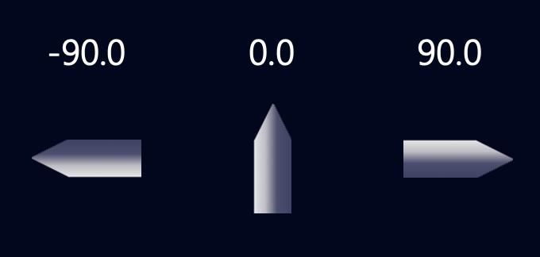

이 함수는 우주선의 현재 수평 속도를 실수형으로 반환합니다.
- 음수 : 우주선이 좌로 이동 중
- 양수 : 우주선이 우로 이동 중
getVelocityX()
이 함수는 우주선의 현재 수직 속도를 실수형으로 반환합니다.
- 음수 : 우주선이 위로 이동 중
- 양수 : 우주선이 아래로 이동 중
getVelocityY()
이 함수는 우주선의 현재 각도를 실수형으로 반환합니다.(-180.0 ~ +180.0)

getAngle()
이 함수는 우주선의 현재 고도(FT)를 정수형으로 반환합니다.
평지 모드에서 착륙지점의 고도는 0FT 입니다.
getHeight()
이 함수는 우주선의 현재 각속도를 실수형으로 반환합니다.
- 음수 : 우주선이 반시계 방향으로 회전 중
- 양수 : 우주선이 시계 방향으로 회전 중
getRotationVelocity()
이 함수를 호출하면 우주선의 주 엔진을 작동시킵니다.
engineOn()
이 함수를 호출하면 우주선의 주 엔진을 정지합니다.
engineOff()
이 함수를 호출하면 우주선의 좌측 추진체을 작동합니다.
(우주선의 각속도가 증가합니다.)
rotateLeft()
이 함수를 호출하면 우주선의 좌측 추진체을 정지합니다.
stopLeftRotation()
이 함수를 호출하면 우주선의 우측 추진체을 작동합니다.
(우주선의 각속도가 감소합니다.)
rotateRight()
이 함수를 호출하면 우주선의 우측 추진체을 정지합니다.
stopRightRotation()
이 함수는 Get Method 들의 반환값을 console에 표시합니다.
logging()